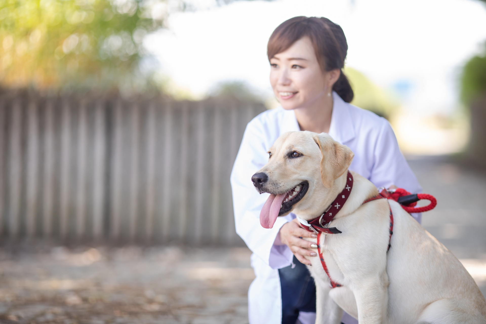
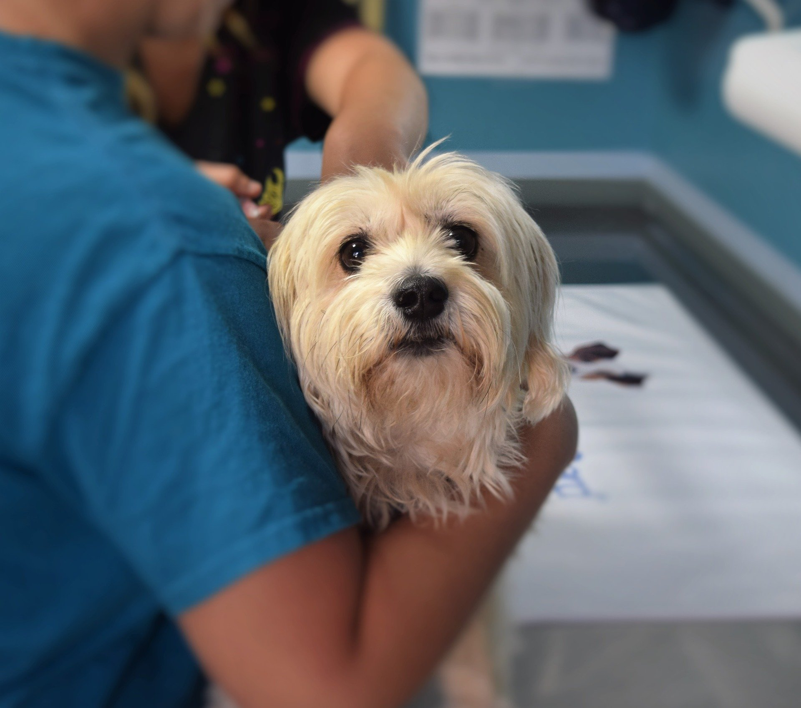

診療案内

当院では、人と動物の健康で快適な暮らしを提供することを目指し取り組んでいます。 動物の具合が悪いときはもちろんのこと、元気なときにしかできない病気の予防、一緒に暮らしていく上で欠かせないしつけなど、気になっていることをご相談ください。 動物それぞれの症状とともに、その動物のおかれている環境、一緒に生活している飼い主の方の立場やお考えも伺いつつ、動物医療の専門家としての意見を示させていただき、検査や治療方針を決めていきたいとつねづね思っています。 難しい病気を早期に発見することができるCTやMRI、治療を行うための放射線治療装置を備えています。また、スタッフ各人の知識・技能の向上が医療の質の向上につながるとの信念のもと、スタッフ育成活動にも力を入れています。

来院時のご注意
ご来院の際は、ケージ・キャリーケース・ネットなどに入れてお越しください。 診察は原則受付順となっておりますが、診察内容により順番が前後する場合がございますのでご了承ください。 初診やワクチン接種の場合は、受付終了時間の一時間前までのご来院をお願いいたします。 感染予防、安全のために、病院スペース内では動物同士の接触がないようにお願いいたします。
新型コロナウイルス感染症の予防に際して
- 病院入口で来院者全員に体温測定と手指消毒を実施しております。
- スタッフはマスク・手袋を着用しております。
- 適時、施設内のアルコール清拭を実施しております。
対象動物
犬・猫・※小動物（ウサギ、小鳥、ハムスターなど） 小動物については事前にお問い合わせください。